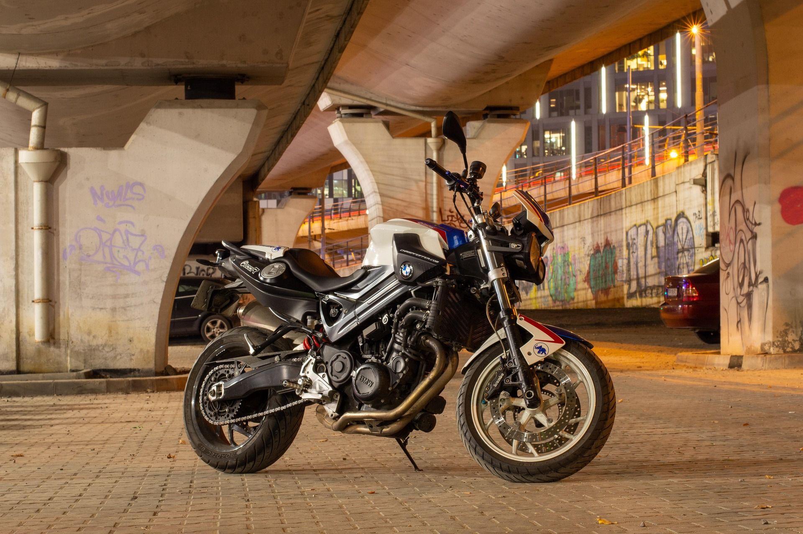
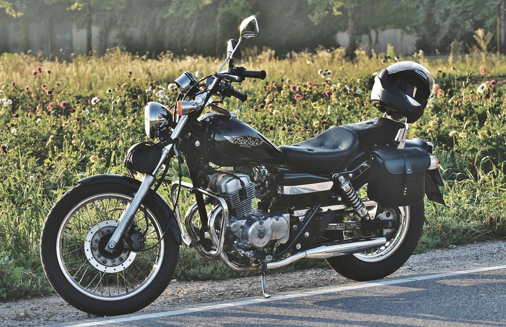

Jawa 42
Classic retro-styled cruiser for modern riders.

GT Bike
High-speed performance with comfort for long rides.

Classic Bike
Reliable and durable motorcycle for everyday use.

Retro Cruiser
Stylish design with smooth riding experience.

Modern Tourer
Perfect balance of power and comfort.

Adventure Bike
Built for long rides and tough roads.